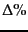
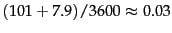
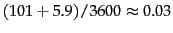
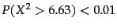
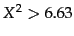
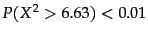
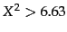
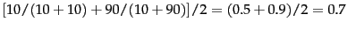
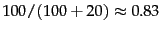

Next: List of Figures
Up: irbook
Previous: Contents
Contents
Index
- Typical system parameters
in 2007.
The seek time is the time needed to position the disk head in
a new position. The transfer time per byte is the rate
of transfer from disk to memory when the head is in the right position.
- Collection statistics for Reuters-RCV1. Values are
rounded for the computations in this book.
The unrounded
values are:
806,791 documents, 222
tokens per document, 391,523 (distinct) terms,
6.04
bytes per token with spaces and punctuation,
4.5 bytes per token without spaces and punctuation,
7.5 bytes per term,
and 96,969,056 tokens.
The
numbers in this table correspond to the third line (``case
folding'') in icompresstb5.
- The five steps in constructing an
index for Reuters-RCV1 in blocked sort-based indexing. Line numbers refer to Figure 4.2 .
- Collection statistics for a large collection.
- The effect of preprocessing on
the number of terms,
nonpositional postings, and tokens for Reuters-RCV1.
``'' indicates the reduction in size from the
previous line, except that ``30 stop words'' and ``150 stop
words'' both use ``case folding'' as their reference
line. ``T%'' is the cumulative (``total'') reduction from unfiltered.
We performed stemming with the Porter stemmer
(Chapter 2 , page 2.2.4 ).
- Dictionary compression for Reuters-RCV1.
- Encoding gaps instead of document IDs. For example,
we store
gaps 107, 5, 43, ..., instead of
docIDs 283154, 283159, 283202, ... for
computer.
The first docID is left unchanged (only
shown for arachnocentric).
- Some examples of unary and
 codes.
Unary codes are only shown for the smaller numbers.
Commas in codes are for readability only and are not part of the actual codes.
codes.
Unary codes are only shown for the smaller numbers.
Commas in codes are for readability only and are not part of the actual codes.
- Index and dictionary compression for Reuters-RCV1.
The compression ratio depends on the proportion of actual text
in the collection. Reuters-RCV1 contains a
large amount of XML
markup. Using the two best
compression schemes, encoding and blocking with
front coding, the
ratio compressed index to collection size is therefore
especially small for Reuters-RCV1:
.
.
- Two gap sequences to be merged in blocked sort-based indexing
- Cosine computation for Exercise 6.4.4 .
- Calculating the kappa statistic.
- INEX 2002 collection statistics.
- INEX 2002 results of the vector space model in Section 10.3 for
content-and-structure (CAS) queries and the quantization function Q.
- A comparison of content-only and full-structure
search in INEX 2003/2004.
- Data for parameter
estimation examples.
- Training and test times for
NB.
- Multinomial versus Bernoulli model.
- Correct estimation implies accurate prediction, but accurate
prediction does not imply correct estimation.
- A set of documents for which
the NB independence assumptions are problematic.
- Critical values of the
 distribution with one degree of freedom. For example, if
the two events are
independent, then
. So for

the assumption of independence can be rejected with 99% confidence.
distribution with one degree of freedom. For example, if
the two events are
independent, then
. So for

the assumption of independence can be rejected with 99% confidence.
- The ten largest classes in the
Reuters-21578
collection with number of documents in training and test sets.
- Macro- and microaveraging.
``Truth'' is the true class and
``call'' the
decision of the classifier. In this example, macroaveraged precision is
. Microaveraged precision is
.
- Text classification effectiveness numbers on Reuters-21578
for F (in percent). Results from
Li and Yang (2003) (a), Joachims (1998) (b: kNN)
and Dumais et al. (1998) (b: NB, Rocchio, trees, SVM).
- Data for parameter estimation exercise.
- Vectors and class centroids for the data in
Table 13.1 .
- Training examples for machine-learned scoring.
- Some applications of clustering in information
retrieval.
- The four external evaluation measures applied to
the clustering in Figure 16.4 .
- Comparison of HAC algorithms.
© 2008 Cambridge University Press
This is an automatically generated page. In case of formatting errors you may want to look at the PDF edition of the book.
2009-04-07